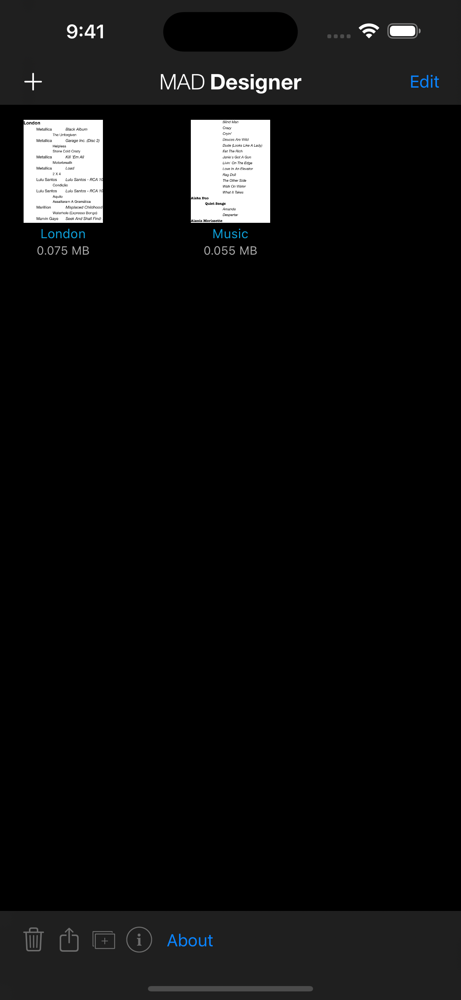
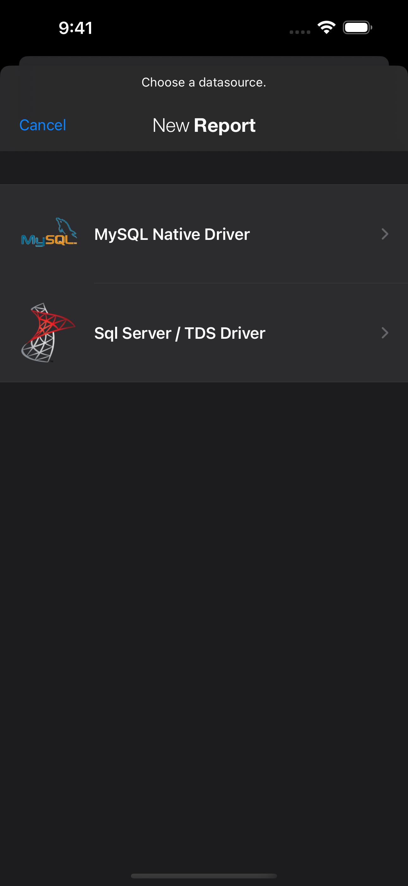
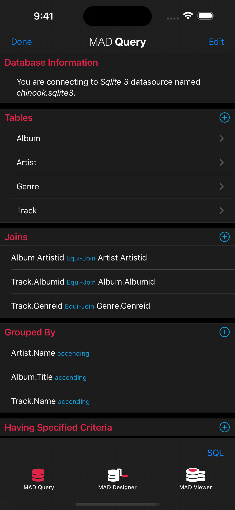
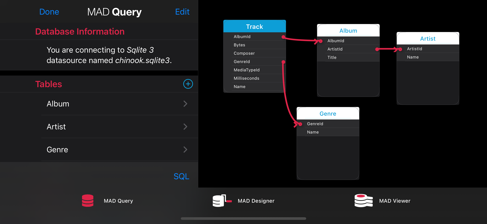
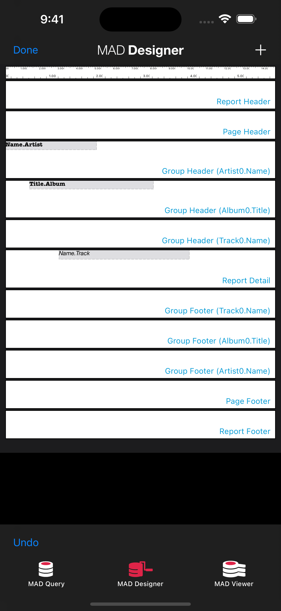
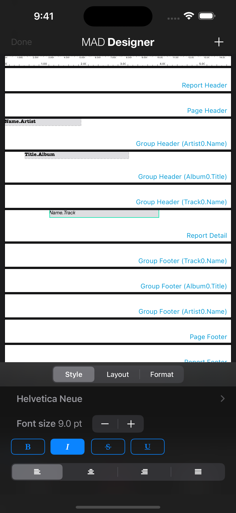
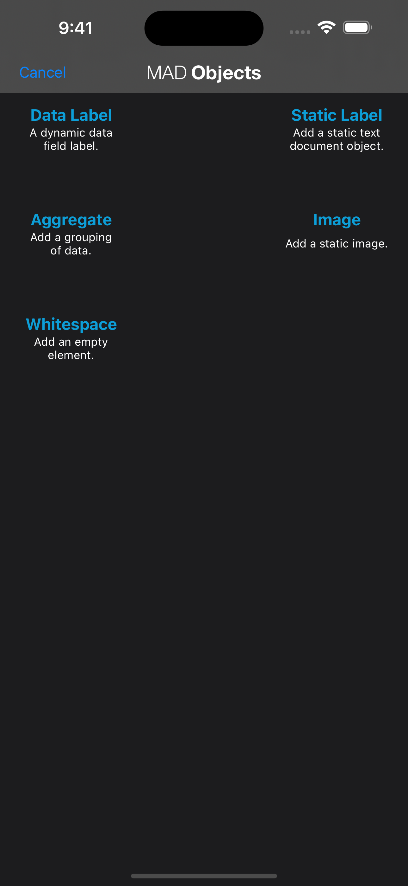
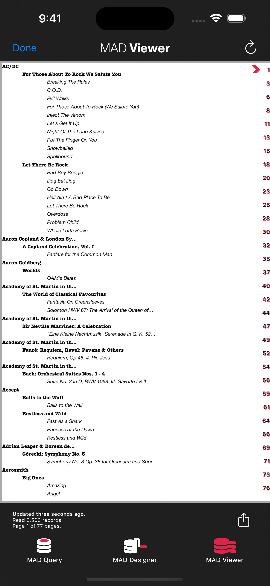

MAD Designer
Open-Source BI Report Builder for macOS & iOS
Design and share custom business intelligence reports anywhere. Connect to PostgreSQL, MySQL, MariaDB, Microsoft SQL Server, and SQLite, build queries visually or in SQL, and export reports to PDF, HTML, CSV, and JSON.
Install via Homebrew: brew install --cask mthomason/tap/mad-designer • Sample reports: London.mad · Music.mad
The iOS App Store release returns in early 2027. Sponsors fund development and the relaunch.
Key Features
Connect to Your Databases
Securely connect to PostgreSQL, MySQL, MariaDB, Microsoft SQL Server, and SQLite databases.
Powerful Query Designer
Build ad hoc queries with multiple tables, joins, groupings, and filters to get the exact data you need.
Rich Report Designer
Create beautiful reports with data labels, images, summaries, and custom formatting.
Share & Export
Share interactive reports with colleagues or export them as PDFs for wide distribution.
See It In Action

App Preview
The file explorer, showing available sample reports.

Choose a datasource (MySQL or SQL Server) to create a new report.

The powerful and intuitive query designer.

A landscape view of the query designer for more complex queries.

The report designer, where you bring your data to life.

Easily apply formatting to any data field in your report.

Select from various data field types to build your report.

A finished sample report, ready to be shared.
Designed for Professionals
Business Analysts
Transform raw data into clear, actionable insights to drive business decisions.
Data Professionals & Developers
Quickly test database connections, run queries, and provide data solutions to end-users.